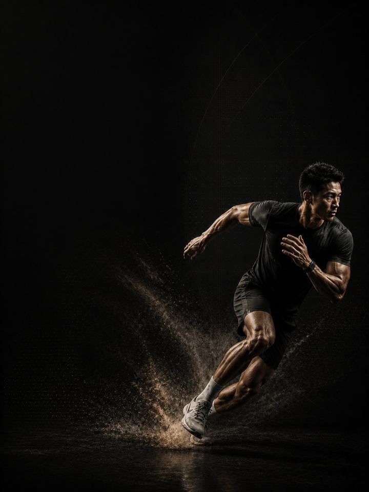

Multidirectional · Build
Turn the base into acceleration, braking and change of direction that still hold in the last twenty minutes.
- Built forfootball, basketball and handball players
- Training days3 gym days a week around your sport, or 2 in season
- Session length48–60 minutes
- Equipmentfull gym, plus a med ball, sled and cones if available
- Formatmobile PDF, every exercise linked to a demo video
The store opens soon. For now, Buy opens an Instagram message and you receive the PDF there.
Who it's for
Football, basketball and handball players who have built a strength base and now need to use it. Field and court sports are not endurance events and they are not sprint events. They are hundreds of short accelerations, decelerations and cuts, repeated under fatigue. The player who fades in the last twenty minutes is rarely the unfit one. It is the one whose ability to slow down has run out.
Block 1 built the engine. This block teaches it to start, stop and turn. It trains acceleration first, deceleration harder, change of direction under control, and then repeats all three when tired, which is where matches are decided.
Where it sits in the year: Block 2 of 4 in the Multidirectional family. Base, Build, Compete, Restore, in that order. Run it after Multidirectional · Base, in pre-season or the first stretch of the competitive calendar.
Your week
Three non-consecutive gym days in the off-season. In season, Days 1 and 2 only.
| Sun | Mon | Tue | Wed | Thu | Fri | Sat | |
|---|---|---|---|---|---|---|---|
| Off-season, 3 days | Day 1 | Sport | Day 2 | Sport | Day 3 | Rest | Rest |
| In-season, 2 days | Day 1 | Sport | Day 2 | Rest | Sport | Match | Rest |
The tables in the PDF are written for the 3-day version. In season, never train within 24 hours of a match, and keep the Nordic and Copenhagen work every week regardless.
Every session runs the same way:
- Warm-up, 8–10 min. The same sequence every session. Glutes, hips and shoulders switched on before anything fast happens.
- Speed and power, 12–15 min. Sprints, cuts, jumps and throws, with full recovery between sets. The set stops the moment quality drops.
- Strength, 20–25 min. The heavy compound lifts, with two to three minutes between sets.
- Tissue work, 8–10 min. Nordics, Copenhagens and carries. Last, and never cut.
Speed comes first in the session, always. Speed trained tired is conditioning with extra risk. Tissue work comes last so that it survives a rushed session.
How the 12 weeks progress
Straight-line speed is the easy part. What separates players is how fast they get going, how hard they can stop, and whether either survives to the final twenty minutes. Strength from Block 1 is held all twelve weeks so it does not leak away. The speed work changes every four.
| Weeks 1–4 | Weeks 5–8 | Weeks 9–12 | |
|---|---|---|---|
| Phase | Horizontal force | Lateral reactive strength | Repeat-effort capacity |
| Goal | More force into the ground during acceleration | Lateral strength for braking and redirecting | Speed that holds under fatigue |
| Looks like | Heavy sled and hard starts, every sprint ending in a controlled stop | Shuttles, bounds and lateral work, with heavy strength underneath | Short maximal efforts on incomplete recovery |
| Working sets a week | 70 | 74 | 70 |
| Average effort | RPE 6.9, about 3 reps in reserve | RPE 7.5, about 2.5 in reserve | RPE 7.1, about 3 in reserve |
| Landings a week | 52 | 140 | 64 |
| Throws a week | 20 | 50 | 0 |
The block at a glance
Working sets per week, by what they train. The dashed line is effort.
Where this block sits in the training year
Run the four blocks in order and they make a full training year.
RPE is effort rated from 1 to 10. RPE 7 means about 3 reps left in the tank. Working sets exclude the warm-up.
Deload weeks: weeks 6 and 12 are lighter. Halve the sets, drop the sprint volume, keep the loads, then retest fresh.
The rules that make it work
- Speed work is never conditioning. Sprints, cuts and jumps get full recovery in weeks 1–8: two to three minutes, every time. Phase 3 is the only phase with short rest, and that is deliberate and dosed.
- Every sprint ends in a stop. The deceleration is half the training effect and most of the injury protection. A sprint that skids to a stop is a wasted rep.
- Strength holds, speed rises. Loads stay heavy in weeks 1–8 and are maintained in weeks 9–12. This is not the block for lifting records.
- The sport comes first. In a heavy match week, cut a set, or reduce Day 3 to the warm-up and tissue work. The gym serves the sport.
- A jump number is the cheapest fatigue test there is. Three standing broad jumps at the start of every Day 1, keeping the best. More than 10% below your own rolling average means reduce that day: drop the power work and one set from each lift.
- Count landings, not just sets. Every jump, hop, bound and drop counts, warm-up hops included. Throws, sprints, step-overs and split steps do not. Keep the week under about 150 landings in Build. Sport practice counts on top.
Terms
- Block: 12 weeks. This program. One block develops one set of qualities to a set standard.
- Phase (mesocycle): 4 weeks. Each one targets one quality. Four weeks is a choice, not a rule. The length follows the goal.
- Training week (microcycle): where effort climbs, sets are added and the deload lands.
- Training year (macrocycle): four blocks in order (Base, Build, Compete, Restore), about 48 weeks.
What the block trains
-
Acceleration is its own quality. Almost no sprint in field sport reaches top speed. The first three to five steps decide the duel, and they are a strength expression: big forces into the ground at a hard forward lean. In the program: Heavy Sled, Hill Starts, Knee Drive
-
Deceleration is the missing half. Slowing down loads the body far harder than speeding up, and most non-contact injuries happen there. Every sprint here ends in a stick. The stop is the rep. In the program: Sprint-to-Stick, Bounds, Step-Overs
-
Change of direction is braking plus restarting. A cut is a stop, a reposition and a fresh acceleration in under half a second. Train the three pieces and the cut sharpens. In the program: 5-10-5 Shuttle, Lateral Bounds, Cossacks
-
Repeating is a separate skill. Doing it once is Block 1. Doing it forty times in ninety minutes is this block. Repeated-sprint ability is trained with short maximal efforts and incomplete recovery, not slow long runs. In the program: Shuttle Sets in weeks 9–12
-
The insurance never stops. Hamstring, groin, calf and shoulder still cause most amateur injuries, and the risk rises exactly when the speed work does. In the program: every Day 1, all twelve weeks
How you'll measure progress
You retest in the deload weeks, 6 and 12, so the numbers are taken fresh. The weekly broad jump tracks fatigue in between.
What good progress looks like
- Weeks 1–4: the first three steps feel sharper and the sled load climbs quickly.
- Weeks 5–8: cuts feel planted instead of skidded, and the shuttle time drops on both sides.
- Weeks 9–12: the sprint drop-off shrinks, and the last twenty minutes of a match stop feeling different from the first.
Block done when: you are faster off the mark, planted through the cut, and your sprint drop-off is measurably smaller. The best result is not the fastest single sprint. It is the smallest gap between your first and your last.
Respect the week
Count everything: matches, sport training, gym and sleep. Sudden jumps in weekly workload are the most reliable predictor of injury in amateur sport. In a heavy sport week, drop a gym session or cut the power work, but never cut both the sport and the recovery. Protect 7–9 hours of sleep. It is the most powerful performance tool available, and the cheapest.
The science
Every program in the library is built on published research, and how strong that research is gets stated, not implied. Where the evidence is limited, the page says so.
| Finding | Source | What it does not show |
|---|---|---|
| Strength training cuts sports injuries to under a third of the control rate. Stretching does not reduce them. | Lauersen, Bertelsen & Andersen, British Journal of Sports Medicine 2014. Meta-analysis of 25 RCTs, 26,610 participants. PMID 24100287 | Risk ratio 0.32 for strength training and 0.96 for stretching. The trials varied a lot, and dose was not standardised. |
| Programs that include the Nordic hamstring exercise roughly halve hamstring injuries. | van Dyk, Behan & Whiteley, British Journal of Sports Medicine 2019. Meta-analysis, 15 studies, 8,459 athletes. PMID 30808663 | Risk ratio 0.49, or 0.55 with the high-risk-of-bias studies removed. It measures programs that include the exercise, not the exercise alone. |
| One adductor exercise, three times a week in pre-season and once a week in season, cut reported groin problems by 41%. | Harøy et al., British Journal of Sports Medicine 2019. Cluster-randomised trial, 35 teams, 652 male footballers. PMID 29891614 | Odds ratio 0.59. Self-reported, semi-professional men's football only. Not yet repeated in women or other sports. |
| Every sensible prescription beats not training. Heavier loads rank highest for strength. Multiple sets rank highest for muscle size. | Currier, McLeod, Banfield et al., British Journal of Sports Medicine 2023. Network meta-analysis, 178 strength and 119 hypertrophy studies. PMID 37414459 | The differences between prescriptions were small, and all of them worked. |
What's next
After 12 weeks:
- Next block: Multidirectional · Compete
- One area needs work: the Corrective series
Before you buy: get cleared first if
- You have chest pain, unusual breathlessness, palpitations or dizziness with exertion.
- You have uncontrolled high blood pressure, a known heart condition, or recent surgery.
- You are pregnant or recently post-partum. Get clearance and a tailored program first.
- You have sharp joint pain in one spot that won't settle. Start with the matching AXIS corrective program.
This program is general fitness guidance. It does not replace a medical assessment.
The store opens soon. For now, Buy opens an Instagram message and you receive the PDF there.